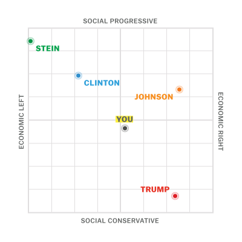

Info |
November 29th, 2022 |
This is an html implementation of a method used to visialize and estimate voting results using a spectrum between two different ideas.

An example of the concept. Credit: vox.com